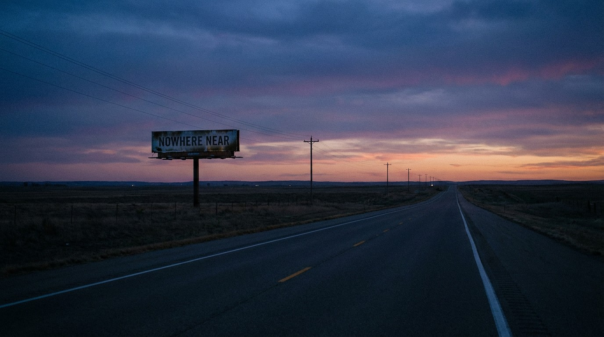

80% of Fatal Crash Drivers Were Sober. America Spent $800 Million on the Other 20%.

Four hundred thousand people. Sober. Dead.
Across the entire FARS database — 490,736 drivers involved in fatal crashes between 2014 and 2023 — roughly 80% tested negative for alcohol and drugs.[1] Not impaired. Not buzzed. Not anything. They got in their cars, drove the speed limit or close to it, and died because something else failed.
NHTSA distributes $800+ million per year in highway safety grants to states.[2] The largest single chunk: impaired driving enforcement. Checkpoints. Saturation patrols. Ignition interlocks. National ad campaigns. Every dollar chasing the 20%.
The 80% gets road paint.
The Soberest Death Traps
If impairment were the primary driver of fatal crashes, low-impairment vehicles would have low death rates. They don’t.
| Vehicle | Class | Impairment | Death Rate | Deaths |
|---|---|---|---|---|
| Toyota Solara | Sedan | 4.1% | 4.25 | 642 |
| Toyota Land Cruiser | SUV | 8.9% | 6.27 | 343 |
| Cadillac Seville | Sedan | 10.5% | 3.89 | 391 |
| Chevrolet Tracker | SUV | 12.7% | 7.83 | 856 |
The Toyota Solara: 4.1% impairment. That is the lowest rate of any vehicle in FARS with significant crash volume. Ninety-six out of every hundred Solara drivers who died were sober. Its death rate — 4.25 per 100 million miles — is three times the Camry’s.[1]
No checkpoint would have saved them. No breathalyzer. No ignition interlock. No hashtag.
What would have saved them: a car that didn’t fold on impact. The Solara shared Toyota’s XV30 platform with the Camry but lost the sedan’s structural rigidity in the conversion to a coupe — fewer pillars, weaker B-column, compromised roof crush resistance.
The Class-Level Picture
Impairment rates barely move between vehicle classes. Death rates move enormously.
| Class | Impairment | Drug % | Alcohol % | Drivers in Fatal Crashes |
|---|---|---|---|---|
| Sports Car | 22.5% | 9.5% | 17.1% | 14,061 |
| Sedan | 20.4% | 8.9% | 15.4% | 197,584 |
| Pickup | 20.1% | 8.6% | 15.2% | 111,320 |
| SUV | 19.5% | 8.4% | 14.7% | 146,411 |
| Van | 18.1% | 8.1% | 13.4% | 21,360 |
A 4.4-percentage-point spread. Sports car to van. The entire range of American driving impairment fits inside a rounding error. Meanwhile the death rate range between the safest and deadliest vehicles in each class spans 10× to 40×.[1]
Behavior is the footnote. Engineering is the story.
Where the Sober Die
In absolute numbers, the vehicles accumulating the most sober-driver deaths are America’s bestsellers:[1]
| Vehicle | Sober Driver Deaths | Total | Sober % |
|---|---|---|---|
| Chevrolet Silverado | 18,787 | 23,675 | 79.4% |
| Ford F-150 | 17,184 | 21,195 | 81.1% |
| Toyota Camry | 11,155 | 13,811 | 80.8% |
| Honda Accord | 11,045 | 13,809 | 80.0% |
| Honda Civic | 9,853 | 12,373 | 79.6% |
| Toyota Corolla | 8,308 | 10,287 | 80.8% |
| Nissan Altima | 8,148 | 10,185 | 80.0% |
Eighty percent. Every single vehicle. The sober-to-impaired ratio barely budges from the Silverado to the Corolla. It’s structural. It’s constant. And it’s ignored.
The Policy Mismatch
The Bipartisan Infrastructure Law authorized $150 million per year in Section 405 National Priority Safety Program grants, with impaired driving as the largest category.[3] NHTSA’s total state grant distribution exceeded $800 million in 2024, with “high-visibility enforcement mobilizations” targeting impairment as the flagship program.[2]
Meanwhile, the Safe Streets and Roads for All (SS4A) program — the federal government’s primary investment in road design, pedestrian infrastructure, and engineering-based safety — distributed $1.8 billion across its first three rounds.[4] For the entire country. Over three years.
The math: $800 million per year to chase 20% of the problem. $600 million per year to fix the other 80%.
We are spending more money on the smaller problem.
What Saves Sober People
Electronic stability control. The 2011 ESC mandate cut single-vehicle crash deaths by 56% in SUVs.[5] No arrest was involved. No Breathalyzer. Nobody went to court. The car just stopped flipping.
Automatic emergency braking. Lane departure warning. Better sight lines. Shorter stopping distances. Unibody construction. Crumple zones that actually crumple where they’re supposed to.
Every one of these saves sober people. None of them is a priority enforcement program.
642 Solara drivers. 391 Seville owners. 856 Tracker families. They don’t get a ribbon campaign.
Sources & References
- NHTSA, Fatality Analysis Reporting System (FARS), 2014–2023. Analysis of PERSON.csv toxicology data joined with vehicle records. nhtsa.gov
- AASHTO Journal, “NHTSA Issues Over $800M in Traffic Safety Grants,” 2024. aashtojournal.transportation.org
- 23 U.S.C. § 405 — National Priority Safety Programs. $150M/yr authorized for fiscal years 2022–2026. law.cornell.edu
- U.S. Department of Transportation, Safe Streets and Roads for All (SS4A) Grant Program. $1.8B distributed across first three rounds (2022–2024). transportation.gov
- IIHS, “Life-saving benefits of ESC continue to accrue,” 2011. SUV single-vehicle crash fatality reduction: 56%. iihs.org
Editorial note: Fatality and impairment data from NHTSA FARS 2014–2023. VMT-based rates estimated using NHTS survey data and public fleet figures. Policy funding figures from public federal program documentation. Analysis is editorial; original data is publicly available.